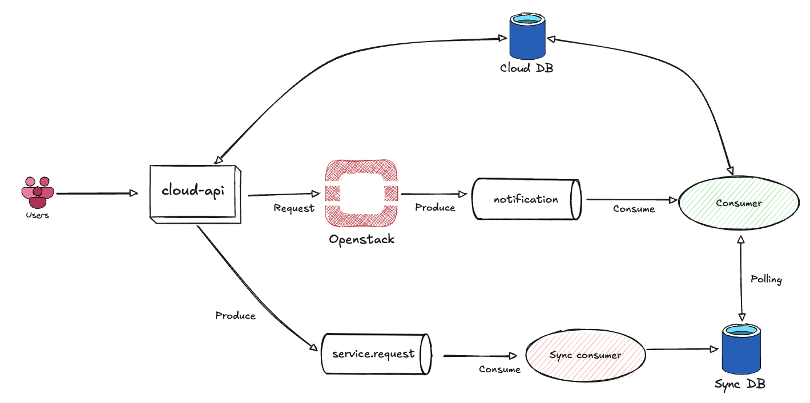
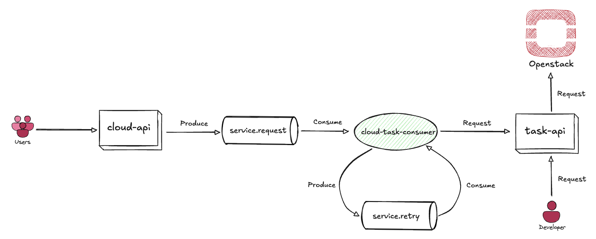
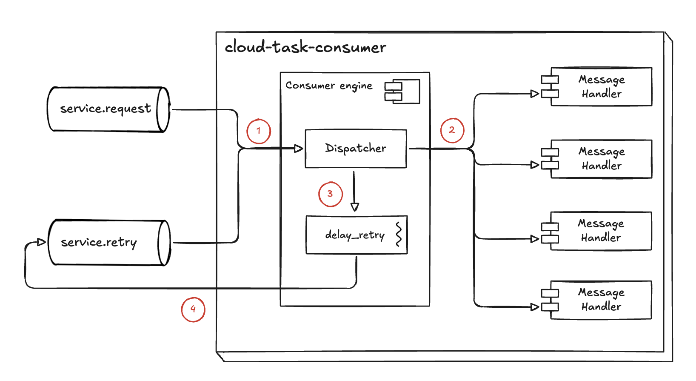

비동기 프로세스 개선 프로젝트
수행 기간 : 2025.01 ~ 현재 (3개월)
프로젝트 개요
클라우드 서비스의 비동기 프로세스 구조를 개선하는 프로젝트 입니다. 이전 구조에서는 오픈스택을 제어하고 자원 정보를 관리하는 cloud-api 에서 비동기 처리를 위해 오픈스택에서 발행하는 kafka의 notification 토픽을 사용하였습니다. 비동기 처리를 위해 오픈스택에 의존하는 구조에서 발생하는 문제를 해결하기 위해 메시지 처리 프로세스를 개선하였습니다.
역할 및 기여
비동기 프로세스 설계
Kafka 기반 메시지 컨슈머 개발
비지니스 로직 리팩토링
개발 환경
Python 3.11
FastAPI, Sqlalchemy, alembic
MySql, Kafka
Gitlab CI/CD
비동기 메시지 처리 흐름
Before

오픈스택의 메시지 큐(notification)를 사용하여 비동기 처리
notification 메시지에는 비동기 처리를 위한 모든 정보가 포함되어 있지 않아. Sync DB 에 의존하는 문제 발생
Sync DB를 Polling 하는 blocking 이 발생해 메시지 처리 성능 저하 발생 (3초간 Polling)

After

오픈스택 메시지 큐 의존성을 제거
service.request 메시지를 직접 consume 하여 비동기 처리
재시도 큐(service.retry)를 사용해 오픈스택 자원이 처리 불가능한 경우 재시도 할 수 있도록 변경
consumer와 실제 로직이 들어있는 api 서버를 분리하여 유지보수 용이성 증가
비동기 처리 속도 향상

kafka 메시지 Consumer

service.request, service.retry 메시지를 consume 하여 비동기 처리
dispatcher에서 메시지를 처리할 수 있는 handler로 작업 분배
handler에서 메시지를 처리할 수 없는 상화이면 쓰레드로 delay_retry 함수를 실행
일정 시간동안 sleep 후 service.retry 큐에 메시지를 전송

Consumer 코드
ConsumerEngine
THREAD_POOL = ThreadPoolExecutor(max_workers=32) class ConsumerEngine: def __init__( self, config: dict, topics: list, producer: SingleTopicProducer, ): """ 입력 받은 config로 Consumer를 생성하는 생성자 Examples: config = { 'bootstrap.servers': 211.172.0.1, 'group.id': "cloud-task-manager", 'auto.offset.reset': 'smallest' } topics = ["test.request"] producer = SingleTopicProducer("test.retry", core=Producer(producer_config)) consumer = ConsumerEngine(config, topics, producer) Args: config: Consumer 생성에 필요한 설정 topic: 소비할 토픽 producer: 메시지 재전송을 위한 Producer """ self.topics = topics self.consumer = Consumer(config) self.producer = producer self.running = False def start_consume_loop(self) -> None: """ kafka 메시지 소비를 시작하는 메서드 :return: None """ logger.info("Consumer 루프 시작") self.running = True try: self.consumer.subscribe(self.topics) while self.running: msg = self.consumer.poll(1.0) if msg is None: continue if msg.error(): if msg.error().code() == KafkaError._PARTITION_EOF: logger.info( "%% %s [%d] 마지막 Offset에 도달했습니다. %d\n" % (msg.topic(), msg.partition(), msg.offset()) ) else: try: # 메시지를 처리하는 부분 self.dispatcher(msg) except Exception as e: sentry_sdk.capture_exception(e) logger.exception(e) finally: self.consumer.commit() finally: self.consumer.close() def dispatcher(self, msg) -> None: """ 메시지를 적절한 핸들러에게 전달하고 핸들러가 처리하지 못할 경우 재전송을 수행한다. Args: msg: Message """ message = json.loads(msg.value().decode("utf-8")) # noqa message = ServiceRequestMessage(**message) for handler_cls in HandlerBase.__subclasses__(): if handler_cls.can_handle(message.action): _message = copy.deepcopy(message) if not handler_cls().handle(_message): self.delay_publish(_message) def delay_publish(self, message: ServiceRequestMessage) -> None: """ 메시지 재전송을 위한 메서드 Args: message: ServiceRequestMessage """ def _publish(): # delay time.sleep(message.retry_interval) message.retry_count += 1 self.producer.produce( value=message.model_dump(), is_raise=False, ) THREAD_POOL.submit(_publish)
Handler
class HandlerBase: MESSAGE_MAP = {} @classmethod def can_handle(cls, event_type: ServiceRequestActionEnum | str) -> bool: return ( cls.MESSAGE_MAP.get(event_type, None) is not None or getattr(cls, event_type, None) is not None ) def handle(self, message: ServiceRequestMessage) -> bool: func_name = self.MESSAGE_MAP.get(message.action) if func_name is None: func_name = getattr(self, message.action).__name__ return getattr(self, func_name)(message=message) class NasHandler(HandlerBase): MESSAGE_MAP = { ActionEnum.NAS_CREATE: "create_nas_sync", ActionEnum.NAS_RESTORE: "restore_nas_sync", ActionEnum.NAS_DELETE: "delete_nas_sync", ActionEnum.NAS_ACL_UPDATE: "update_acl_sync", } @retry_publish(max_retry=10, retry_interval=3) def create_nas_sync(self, message: ServiceRequestMessage) -> bool: return task_client.send(path="/NAS_CREATE", **message.model_dump()) @retry_publish(max_retry=10, retry_interval=3) def restore_nas_sync(self, message: ServiceRequestMessage) -> bool: return task_client.send(path="/NAS_RESTORE", **message.model_dump()) @retry_publish(max_retry=10, retry_interval=3) def delete_nas_sync(self, message: ServiceRequestMessage) -> bool: return task_client.send(path="/NAS_DELETE", **message.model_dump()) @retry_publish(max_retry=10, retry_interval=3) def update_acl_sync(self, message: ServiceRequestMessage) -> bool: return task_client.send(path="/UPDATE_ACL", **message.model_dump())
Retry Decorator
class RetryException(Exception): def __init__(self, message): self.message = f"재시도 횟수를 초과했습니다.\n{message}" def __str__(self): return self.message def retry_publish(max_retry: int, retry_interval: int): def decorator(func): def wrapper(*args, **kwargs): ret = func(*args, **kwargs) message: ServiceRequestMessage = kwargs.get("message") if not ret and message.retry_count >= max_retry: raise RetryException(message) message.retry_interval = retry_interval message.action = func.__name__ # 메서드 이름으로 action 변경 return ret return wrapper return decorator